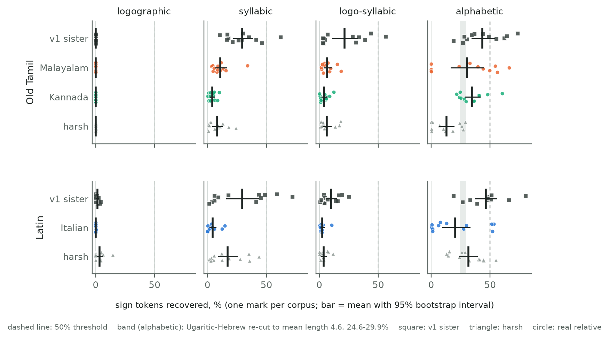
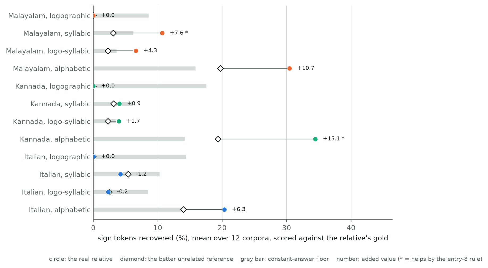
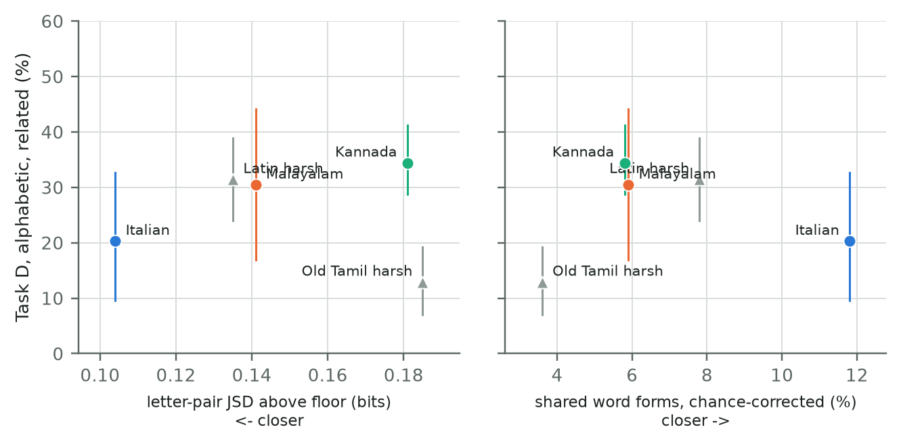

Status: draft written 2026-10-20, revised 2026-10-21 after an audit for oversights, on branch v2,
from the reports named in each paragraph. It does not change any v1 number or the v1 paper
(paper-v1). Every number here is a v2 result, and every decimal in it is checked against a
generated report (reports/v2/cd/analysis/check_numbers.py). Methods are frozen at frozen-v2
(commit 4ce3e90); pre-registration entries 1-8 are in docs/v2_preregistration.md. Each claim
is labelled pre-registered, exploratory or post hoc. Nothing here is, or claims, a decipherment.
harsh setting on both seed blocks,
although it is closer to Latin on every yardstick, and more restarts widen the gap (harsh 43.6%,
Italian 18.1%). Post hoc, negative result 3.| Claim | Evidence | Status | Robustness | What would change it |
|---|---|---|---|---|
| No real relative brings a script type to a 50% mean | Tables v2.3, v2.5; R1 | Pre-registered (entries 6, 7) | Replicated; holds at 10 restarts (highest 41.9%) | A stronger solver; other relatives or texts |
| A relative helps measurably in only 2 of 12 cells | C1 | Procedure pre-registered (entry 8), motivation post hoc | One run of 12 corpora per cell; the rule's thresholds are a choice | Other unrelated references; other gold tables |
| Old Tamil alphabetic recovery is in the range of the Ugaritic anchor | R2; Ugaritic report | Pre-registered check | Replicated | Nothing here: it is a consistency check, not confirmation |
Italian falls below harsh (the bracket fails) |
Tables v2.3, v2.5; R3; C3 | Observation post hoc; R3 pre-registered | Replicated; widens with more restarts | A genre-matched Italian text; other Romance texts |
| Closeness on the yardsticks does not predict Task D | Figure v2.3; frequency check | Exploratory | Five points | More pairs |
| Logographic zeros are partly a solver artefact | Reachability check | Exploratory | Computed exactly, no solver | A solver without a unit cap |
| Solver budget is second-order except for one cell | C3 | Pre-registered | Seeds 0-2 only | More restarts or another optimiser |
| The runs are deterministic | C4 | Pre-registered | 120 of 120 identical | - |
The v1 related tier used a synthetic sister cut from the other half of the hidden language's own
source text. It shares phrases with the hidden text and keeps its vocabulary, morphology and word
order, so it is far closer than any attested relative of an undeciphered script is likely to be
(v1, Section 3.6, Table 2). Stage 2 first tried to make the synthetic sister realistic by
calibrating it to the distance between Ugaritic and Hebrew, the classic real case for computational
decipherment (Snyder, Barzilay & Knight 2010). That failed for all five languages in
both settings tried: every mechanism that changes letter pairs also destroys shared word forms, and
a sister cut from the same text keeps too much verbatim text (docs/v2_negative_results.md, item 2).
Stage 2 therefore measures real related languages written in different texts, with no tuning and no
targets: whatever distance each real pair has is the distance used (pre-registration entry 5).
Table v2.1. Real relatives. Each pair is labelled by relationship in every table.
| Hidden (v1 source) | Relative | Relationship | Relative's text | Gold correspondences (cited per row) | Status |
|---|---|---|---|---|---|
| Latin (Caesar, Vergil) | Italian | descendant, of spoken (Vulgar) Latin rather than the Classical written language (Grandgent 1907: §§3-4) | Dante, La Divina Commedia, Project Gutenberg #1000 (public domain in the USA) | Grandgent (1907), section per row | measured |
| Old Tamil (Sangam anthologies) | Malayalam | descendant: "a very ancient offshoot of Tamil… not a sister of Tamil, but a daughter" (Caldwell 1875: 23-24; Gundert, reported there, disagreed) | Ezhuthachan, Adhyātma Rāmāyaṇam Kiḷippāṭṭu, Malayalam Wikisource (CC BY-SA 4.0) | Caldwell (1875), pages per row | measured |
| Old Tamil | Kannada | sister: one of Tamil's "sister idioms" (Caldwell 1875: vi), a separate cultivated language (33-34) | Kumāravyāsa, Karṇāṭa Bhārata Kathāmañjari, Kannada Wikisource (CC BY-SA 4.0) | Caldwell (1875), pages per row | measured |
| Finnish (Kalevala) | Estonian | sister | Kreutzwald, Kalevipoeg, Estonian Wikisource, cantos I-XX | Pajusalu (2012), not yet read | text parsed; gold pending |
| Sanskrit (Rāmāyaṇa) | Pali | descendant | - | - | blocked: no text with clear terms |
| Sumerian | - | isolate | - | - | none tier only |
Data notes.
Registers, periods and sizes differ across pairs, and none of this is controlled.
reports/v2/ugaritic/results.md). Reference size may affect the solver;
it is not controlled.Units and spelling. Units are those of the v1 hidden language: Latin letters by the v1 greedy segmentation, and Old Tamil phonemes. Malayalam and Kannada script are converted to the same phonemes by deterministic tables, tested on hand-checked words. Every pair is measured as written and normalised, and the normalised value is primary, so that spelling conventions do not count as language distance (the Hebrew lesson of v2 entry 3):
Gold tables. Each hidden unit has a regular reflex (its outcome where no conditioned change applies) and a list of attested reflexes, with the section or page of the source for every row. Rows the source does not cover are marked "no source" and are unrecoverable under strict scoring (Old Tamil h, s, ḵ, ṣ for both Dravidian relatives). Both sources are over a century old; their basic consonant correspondences are standard, but details are dated. No gold value comes from Wikipedia. On 2026-10-21 four rows were spot-checked against the scanned texts, and each citation holds: Kannada initial p > h (Caldwell 1875: 53), talei = Malayalam tala (p. 19), Malayalam as an offshoot of Tamil (pp. 23-24) and Latin x > s (Grandgent 1907: §255). This is a spot check, not a full audit.
The Ugaritic-Hebrew yardsticks (v2 anchor) are computed with the same code on each pair. Sample sizes are matched to the anchor, and chance is estimated from shuffled correspondence maps.
Cross-script comparisons are indicative only. Shared word forms and word pairs are not directly comparable between a consonant-only script (Ugaritic-Hebrew) and scripts that write vowels (all the other rows): a consonant skeleton matches far more easily than a full word, even after the chance correction. Comparisons within one script type are the meaningful ones.
Table v2.2. Yardsticks, normalised spelling (primary). cc = chance-corrected. Real-pair intervals: bootstrap over the relative's lines, 200 replicates, 95%.
| Pair | Relationship | Script type | JSD above floor (bits) | Shared word forms, cc | Word pairs, cc | Verbatim 6+ units |
|---|---|---|---|---|---|---|
| Ugaritic-Hebrew (vowel letters removed) | sister | consonant-only | 0.089 | 58.4% | 4.6% | 0.8% |
| Latin-Italian | descendant | alphabet | 0.104 (0.101-0.108) | 11.8% (9.6-11.5%) | 0.6% (0.1-0.7%) | 1.9% (0.7-3.3%) |
| Old Tamil-Malayalam | descendant | abugida | 0.139 (0.137-0.145) | 5.7% (4.0-5.2%) | 0.0% (0.0-0.0%) | 1.8% (0.4-2.4%) |
| Old Tamil-Kannada | sister | abugida | 0.180 (0.178-0.186) | 4.7% (3.8-5.1%) | 0.0% (0.0-0.1%) | 1.0% (0.4-2.4%) |
Latin, v1-like sister* / harsh |
synthetic | as hidden | 0.006 / 0.135 | 53.1% / 7.8% | 7.1% / 1.1% | 12.4% / 2.4% |
Old Tamil, v1-like sister* / harsh |
synthetic | as hidden | 0.002 / 0.185 | 57.6% / 3.6% | 8.5% / 0.1% | 17.8% / 1.8% |
* The yardstick stand-in for the v1 sister: sister-v4 with v1-like settings (reports/v2/sister/), not
the v1 sister object used in the Task D tables.
For Latin-Italian and Malayalam the plug-in estimate of shared word forms lies above its own bootstrap interval, because resampling duplicates lines and so lowers the share of distinct forms; the interval is the conservative reading.
Reading.
harsh setting and far from the v1-like
sister, which shares 4-12 times as many word forms.What the verbatim matches are (exploratory inspection, reports/v2/real_relatives/verbatim.md).
Verbatim runs of 6+ units occur in 1.4% (Malayalam), 1.6% (Kannada) and 2.5% (Italian) of sampled
windows, against 0.0-0.1% through shuffled maps and 0.3-0.4% for an unrelated language with a similar
open syllable shape (the v1 Finnish hidden half, letters as they are). They are therefore signal,
but not shared text:
In Malayalam about a quarter of the matches (35 of 143) exist only after normalisation. By inspection, most of these pair a native Tamil string with a Sanskrit loanword: the loan is a coincidental partner, not a shared loan.
Design (entries 1, 2, 4-6).
References: the relative's whole text at the script's unit level, as v1 writes its references:
No reference carries a correspondence table, so every score is before the cognate step.
Tiers: related gives the relative alone. candidates gives the relative plus the other v1
languages.
harsh
(labelled lower bound in entry 4, which it is not for real relatives: negative result 3).Table v2.3. Task D, related tier, revised EM, strict score: mean % of sign tokens over 6 corpora
(number of corpora at or above 50%). From reports/v2/cd/results.md.
| Hidden | Relative | Relationship | Logographic | Syllabic | Logo-syllabic | Alphabetic |
|---|---|---|---|---|---|---|
| Old Tamil | v1 sister (upper bound) | synthetic | 0.0 (0) | 26.7 (0) | 19.0 (0) | 42.5 (2) |
| Old Tamil | Malayalam | descendant | 0.0 (0) | 6.2 (0) | 5.9 (0) | 30.4 (1) |
| Old Tamil | Kannada | sister | 0.0 (0) | 3.3 (0) | 2.9 (0) | 32.2 (0) |
| Old Tamil | harsh (lower bound) |
synthetic | 0.1 (0) | 6.2 (0) | 5.9 (0) | 16.4 (0) |
| Latin | v1 sister (upper bound) | synthetic | 1.4 (0) | 32.2 (1) | 9.8 (0) | 45.4 (2) |
| Latin | Italian | descendant | 0.0 (0) | 6.0 (0) | 1.5 (0) | 16.9 (1) |
| Latin | harsh (lower bound) |
synthetic | 1.5 (0) | 24.4 (0) | 4.6 (0) | 36.1 (1) |
The real Ugaritic anchor, for comparison (reports/v2/ugaritic/results.md; pre-registered 50%
criterion failed): 32.0% (revised EM) and 33.9% (original EM) on natural texts, related tier,
alphabetic. The like-for-like condition, texts re-cut to the Indus mean length of 4.6, gives
24.6-29.9% with revised EM.
Table v2.4. Task C, candidates tier: share of corpora (24 per row, all script types) where the
solver picked the right family, and the references the revised rule chose.
| Hidden | Relative offered | EM revised | EM original | Frequency rank | Chosen by EM revised |
|---|---|---|---|---|---|
| Old Tamil | Malayalam | 0% | 0% | 38% | Latin 16, Finnish 8 |
| Old Tamil | Kannada | 38% | 0% | 8% | Latin 10, Kannada 9, Finnish 5 |
| Latin | Italian | 25% | 0% | 50% | Finnish 18, Italian 6 |
| Old Tamil | v1 sister | 33% | 13% | 13% | Latin 13, sister 8, Finnish 3 |
| Latin | v1 sister | 96% | 8% | 63% | sister 23, Finnish 1 |
For Latin, picking Sanskrit also counts as the right family (Indo-European), as in v1.
Fresh-seed replication (entry 7, pre-registered). The whole run was repeated on seeds 3-5 (120
corpora, no errors; the corpora were checked identical to the v1 records before any score was read).
All four checks fixed before the run replicated (reports/v2/cd/replication.md):
harsh for alphabetic (23.8% against 26.8%) and syllabic scripts (2.4%
against 9.4%). The alphabetic margin is small.Some cells move a lot between the two seed blocks (Malayalam syllabic 6.2% then 15.1%; Old Tamil
harsh alphabetic 16.4% then 9.5%). The pooled means over all 12 corpora are therefore the steadier
summary, and they are given here beside the primary seeds 0-2 tables.
Table v2.5. Task D, related tier, revised EM, strict: mean over 12 corpora (seeds 0-5) with a 95%
bootstrap interval over corpora (descriptive; reports/v2/cd/pooled.md).
| Hidden | Relative | Relationship | Syllabic | Logo-syllabic | Alphabetic |
|---|---|---|---|---|---|
| Old Tamil | v1 sister | synthetic | 29.3 (21.9-38.1) | 21.3 (11.1-32.3) | 43.5 (34.4-53.4) |
| Old Tamil | Malayalam | descendant | 10.7 (6.9-15.7) | 6.6 (3.9-9.7) | 30.5 (16.9-44.2) |
| Old Tamil | Kannada | sister | 4.0 (2.5-5.8) | 3.9 (2.0-6.2) | 34.4 (28.8-41.2) |
| Old Tamil | harsh |
synthetic | 8.1 (4.3-12.4) | 6.3 (3.0-9.8) | 12.9 (7.0-19.2) |
| Latin | v1 sister | synthetic | 29.3 (16.2-43.1) | 9.7 (5.8-14.4) | 46.3 (37.6-55.3) |
| Latin | Italian | descendant | 4.2 (1.8-6.9) | 2.3 (1.2-3.9) | 20.3 (9.6-32.6) |
| Latin | harsh |
synthetic | 16.9 (9.3-25.4) | 3.6 (1.8-5.6) | 31.5 (24.0-38.9) |
Logographic scripts are left out of this table: every real relative scores 0.0 there (the full table is
in pooled.md).

Figure v2.1. Task D per corpus, related tier, revised EM, strict, seeds 0-5 (12 corpora per row).
Bar: mean with 95% bootstrap interval. Band (alphabetic): the Ugaritic anchor re-cut to mean length
4.6. Scores are often near 0% or near 50% for the same relative and script type.
Pre-registration entry 8 fixed four controls and their readings before they ran (post hoc in
motivation). Results in reports/v2/cd/controls.md.
C1. Unrelated reference. The same corpora are run with an unrelated v1 language as the only reference, and its predictions are scored against the real relative's gold, exactly as the relative's own run. A relative helps in a cell only if it adds at least 5 points over the better unrelated reference and is ahead in at least 9 of the 12 paired corpora.
C2. Constant-answer floor. Mapping every sign to the single most common regular reflex scores 14.2-15.8% on alphabetic scripts. The real relatives stay above it there. On logographic scripts the floor is 8.6-17.5% and every real relative scores 0.0%; on syllabic and logo-syllabic scripts, Kannada and Italian are at or below it.
C3. Solver budget. With 10 EM restarts instead of 3 (the first three identical), only Old
Tamil-Malayalam, alphabetic, moves by more than 10 points: 30.4% to 41.9%. Kannada alphabetic falls
from 32.2% to 28.9%, Italian alphabetic rises from 16.9% to 18.1%, and Latin harsh alphabetic rises
from 36.1% to 43.6%. A higher likelihood does not always mean more signs right.
C4. Determinism. The 3-restart reruns reproduce all 120 frozen-run values exactly.
Degeneracy. The share of sign tokens assigned to the single most common predicted unit is 12.4% (Old Tamil) and 12.2% (Latin) with the real relatives, against 11.1% and 11.2% with unrelated references: the solutions do not collapse onto one unit.
Reachability (exploratory, reports/v2/cd/reach_check.md). The entry-2 ceiling counts a token as
recoverable if its reflex occurs anywhere in the relative, but the frozen solver only predicts among
the reference's 250 most frequent units. On logographic scripts the reachable share is far lower
than the ceiling: 25.4% against 51.4% (Italian), 2.3% against 24.3% (Kannada) and 10.1% against 16.9%
(Malayalam). On syllabic and alphabetic scripts the cap hardly binds. The v1 sister, cut from the
same text as the hidden corpus, shares its frequent words, so the cap rarely binds for it. Logographic
comparisons between the synthetic sister and real relatives are therefore partly a solver artefact.

Figure v2.2. Each real relative (circle) against the better unrelated reference (diamond) and the constant-answer floor (grey bar), mean over 12 corpora, scored against the relative's gold. Number: added value; * = helps by the entry-8 rule.
related tier, 7 of the 144 real-relative runs reach 50% (3 relatives, 4 script types,
12 corpora each): 2 on seeds 0-2 and 5 on seeds 3-5, all alphabetic. Single runs reach 66.0%
(Malayalam), while every cell mean stays at or below 36.7% (reports/v2/cd/pooled.md).docs/v2_negative_results.md, item 3).harsh on both seed blocks for alphabetic and syllabic scripts (pooled
alphabetic 20.3% against 31.5%), and more restarts widen the gap.harsh for syllabic and logo-syllabic scripts on both seed blocks.harsh on every yardstick and agrees better in letter frequencies (unigram
JSD 0.026 against 0.059; reports/v2/cd/frequency_check.md), yet scores lower. A text effect of the
needed size is documented in the Ugaritic anchor, where a genre-matched Hebrew reference added 5-16
points.
Figure v2.3. Alphabetic Task D (related tier, mean and 95% interval over 12 corpora) against two
yardsticks for the same pairs (harsh yardsticks measured on seeds 0-2). Same-script pairs only.
Exploratory: five points.
For Indus, where no relative is agreed and the candidates and none tiers are the relevant ones,
these results add one point. With these comparison-based solvers, a genuine relative adds little
beyond what an unrelated language or a constant answer already gives, outside alphabetic scripts.
Inside them the added value is modest and unstable.
candidates and none tiers are the relevant ones there.reports/v2/ugaritic/results.md).
Text effects of that size could account for the bracket failure.reports/v2/cd/pooled.md). Hebrew letters also cannot match an unrelated
reference by coincidence, while Latin-alphabet transcriptions can (control C1). The agreement is a
consistency check, not corroboration.reports/v2/cd/analysis/, which the frozen-code check does not cover. They call
only frozen functions; each was committed before its run, and the commits are named in the
analysis history.frozen-v2 (commit 4ce3e90); final run of
120 corpora with no errors.related-tier evidence; the bracket is secondary.37be99f) before
any corpus was generated; corpora checked identical to the v1 records before any score was
read. A container restart stopped the run at 114 of 120 corpora; the resumable driver finished
it. All four checks R1-R4 replicated.29de37e) before any
control ran; post hoc in motivation. Run records archived with SHA-256 sums.in.ernet.dli.2015.459581.introductiontovu00gran.